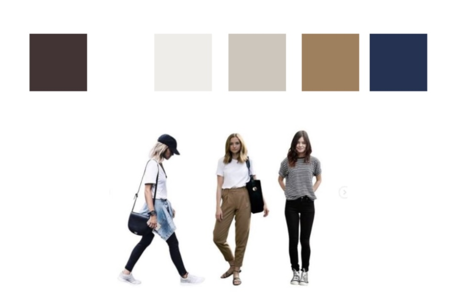
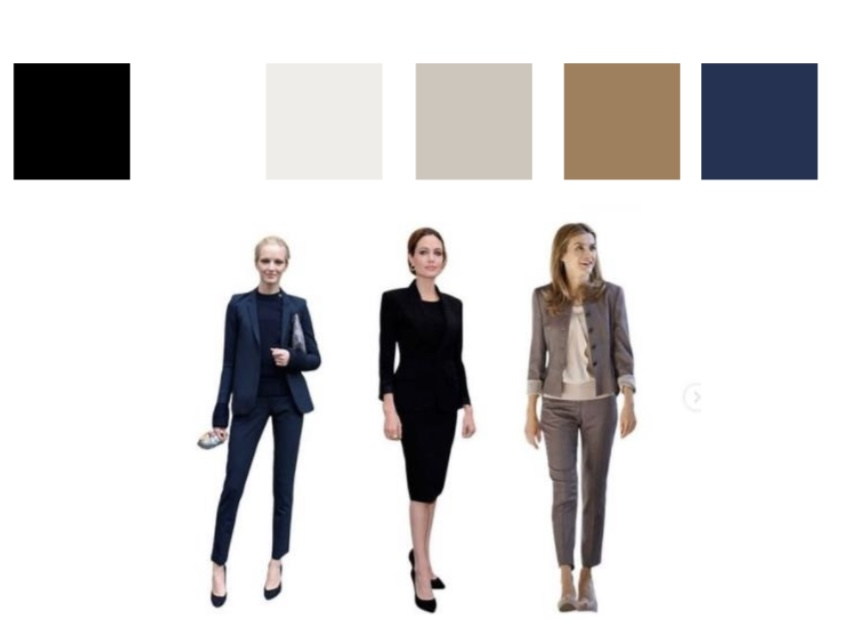

Tipos de Estilo
Esportivo
Praticidade, liberdade de movimento.
Características: informal, prática e ativa.
Faz questão: conforto e funcionalidade.
O que gosta: peças soltas, sapatos baixos, combinação de cores neutras e vibrantes, estampas marcantes.
Imagem que transmite: casualidade e descontração.
Elegante
Refinada e sofisticada.
Características: atuais, reservada, com personalidade.
Faz questão: qualidade, peças neutras e multiplicadoras de guarda-roupa.
O que gosta: peças clássicas, misturar modelagens justas e soltas.
Imagem que transmite: pessoa alinhada, independente e segura.
Tradicional
Conservador, atemporal.
Características: discreto e formal.
Faz questão: qualidade, durabilidade, marcas.
O que gosta: peças estruturadas, cortes de alfaiataria.
Imagem que transmite: autoridade e segurança.
Moderno
Vaidade e ousadia.
Características: ligada a novidades, criatividade nas composições.
Faz questão: ser a primeira nas últimas tendências.
O que gosta: peças diferenciadas, assimetria, muitos acessórios.
Imagem que transmite: confiança, mulher de atitude.
Romântico
Feminilidade, delicadeza, charme.
Características: sensibilidade, delicadeza, vaidade.
Faz questão: roupas combinando, cores frias, saias e vestidos.
O que gosta: tecidos fluidos, renda, estampas florais.
Imagem que transmite: graciosidade, receptividade.
Sensual
Sensualidade, ousadia, atração.
Características: exuberante, chamativa, sedutora.
Faz questão: valorizar o corpo, usar decotes.
O que gosta: brilhos, transparências, decotes.
Imagem que transmite: confiança, poder.